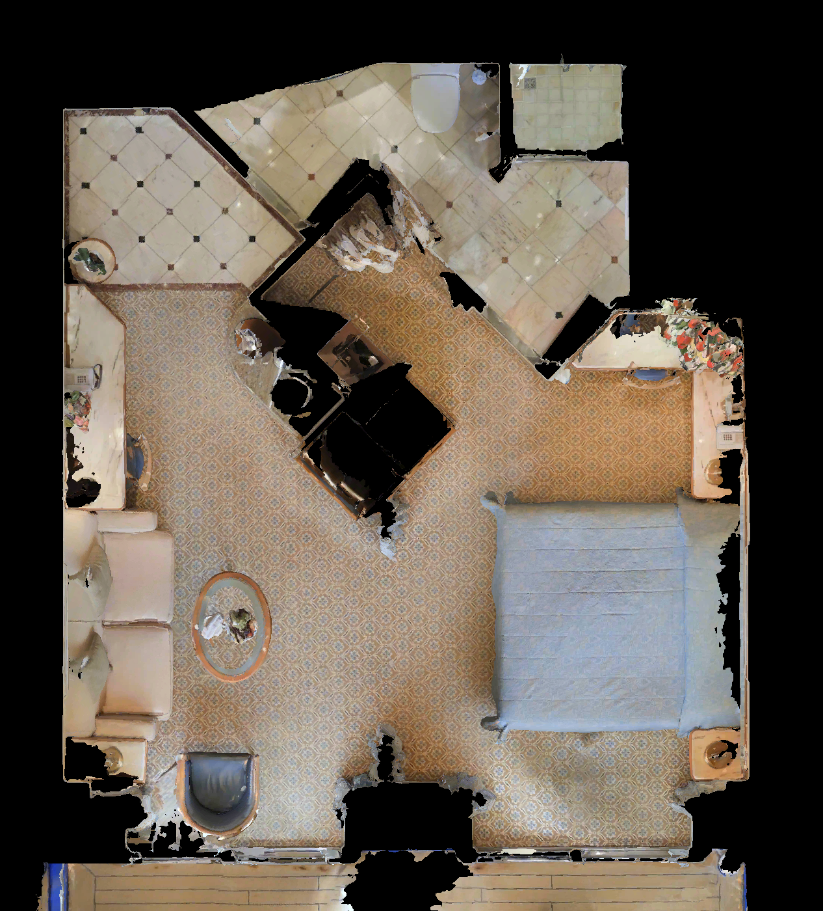

후보 위치 14개 → 30cm 가구 여유 통과 1개 → 8방향 중 범위 이탈 등 5장 제외 → 3장 유지. 기존에는 근거리 1장을 추가 제외했지만 v2에서 복원했습니다. 복원 관측 p0008_y315의 depth는 99.78% 유효합니다. 30cm는 보수적인 여유 조건이며 탈락이 반드시 충돌을 뜻하지는 않습니다. 20cm 기준이면 위치 9개가 통과하지만 해당 완화는 적용하지 않았습니다.
v2: 가까운 벽·가구를 보는 유효 관측을 유지합니다. 5LpN3gDmAk7_L1: 스캔 depth 결손 10% 미만은 유지하되, 2DFP 누락 영역 시야 검사는 유지합니다.
← 28개 층 목록유효 관측 3개 / 위치 1개. 자동 검사 결과이며 사용자 승인 대기입니다.

의견은 현재 브라우저에만 저장됩니다. 아래 버튼으로 JSON을 내보내 전달해주세요.
전체 픽셀 float32 furnished depth·pose·40-ray structural GT는 파일 서버의 UnLoc/capture_v2/scenes/HxpKQynjfin_L0/에 저장되어 있습니다. 이 페이지는 이미지와 GT 곡선 검토용입니다.